Программа КартоБонус (далее «карта») представляет из себя интерактивную веб-карту, построенную на базе технологии MS Silverlight + ESRI API. Карта изготовлена для того, чтобы предоставить пользователям возможность собирать (набрать) собственные коллекции слоев из имеющегося репозитория слоев и далее работать с этой коллекцией как с обычной веб-картой.
Вы можете посмотреть ознакомительный видеоролик здесь (нужен Flash player) или здесь (если нет Flash).
Карта работоспособна во всех современных браузерах, снабженных модулем MS Silverlight. Тем не менее, мы рекомендуем использовать браузер Google Chrome версии не ниже 22, ибо в процессе разработки мы пользуемся именно этим браузером и поэтому можем гарантировать, что представленные в карте функции полностью работоспособны для этого браузера.
Основные особенности,
отличающие КартоБонус от других подобных программ, таковы:
добавление в
карту слоев из специального репозитория, при этом содержимое
репозитория вы вольны определять сами; нанесение на карту произвольных
пометок, сохраняемых вместе с картой; собственно функции сохранения и
восстановления подготовленной вами карты, позволяющие работать с
разными картами так же легко как работать с разными веб-страницами. И
главное - дополнительные функциональные модули, добавляемые к вашим
картам по заказу.
Вы можете использовать программу в нашей редакции или, что часто нужно госучреждениям и крупным конторам, вы можете взять у нас распространяемую версию и установить ее на своем сервере. При необходимости, мы можем добавить в программу нужные вам функции или, пользуясь возможностями платформы, вы сами можете доработать карту.
Возможно, вы захотите работать со слоями карты для которых определен ограниченный доступ. В таком случае заверяем, что данные таких картографических слоев нам не передаются и не сохраняются у нас. Технически, при запуске программы вы скачиваете программу к себе и работает она на вашем компьютере в вашем браузере. Но при этом есть два случая, когда ваши данные попадают не на ваши компьютеры: когда вы нажимаете кнопку «сохранить» - данные пометок и урлы используемых в карте слоев сохраняются на нашем сервере; когда вы нажимаете кнопку «печать (GP)» - специальный сервер Esri пытается получить изображения слоев по каждому включенному слою из легенды.
Как начать работать с картой. В этом разделе мы покажем как создать карту, добавить на нее слои и пометки; как сохранить результат работы и использовать сохраненную карту впоследствии. В тексте используются названия кнопок, их подробные описания вы можете найти ниже.
Откройте программу.
Если вам не подходит так называемая подложка, выберите другую. Для этого щелкните кнопку «выберите базовую карту» и щелкните подходящий вам вариант в появившейся галерее. Уберите галерею с экрана, еще раз щелкнув по кнопке «выберите базовую карту».
Добавьте на карту слой. Для этого щелкните кнопку «службы» и в открывшемся окне выберите приглянувшийся слой, представленный в виде уменьшенного изображения. Щелкните кнопку «добавить слой к карте» в нижней части окна. Также слой можно добавить сделав doubleclick на картинке слоя. Закройте окно. На карту добавлен выбранный слой и в легенде появилась новая запись. Если выделить эту запись, то слоем можно манипулировать через команды контекстного меню (ПКМ) или кнопки тулбара легенды.
Добавьте на карту пометку. Для этого щелкните кнопку «пометки» и затем выберите тип пометки «точка», это крайний левый значок в появившемся тулбаре. Шелкните по карте в любом месте - на карте появится значок пометки и откроется диалоговое окно для задания параметров пометки. Впишите любой текст в текстовые поля окна и нажмите кнопку «сохранить». Пометка создана. Если щелкнуть по значку пометки, опять откроется диалоговое окно, вы можете отредактировать параметры пометки. Чтобы переместить пометку на другое место, удалите пометку и создайте ее на новом месте.
Сохраните карту. Для этого щелкните кнопку «сохранить» и впишите название сейва в появившемся окошке. Подтвердите сохранение кнопкой «сохранить» в этом окошке. Карта сохранена. Обратите внимание на то, что изменился урл в адресной строке браузера, он теперь выглядит наподобие такого варианта http://www.allgis.org/cartobonus/map.html#bc73bc877ec65fed0751e740bd88e59c77e4f93d
Скопируйте его (Ctrl-C, Ctrl-V) в каком нибудь текстовом файле и/или сохраните в закладках браузера. Используя этот урл, сохраненную вами карту можно открыть в браузере в любое время и на любом компьютере, с которого доступна программа. Это возможно, так как список слоев и данные пометки сохранены на нашем сервере www.allgis.org.
Всё, на этом первый урок закончен.
Функции зумирования и панорамировани
Зумирование и панорамирование карты вы можете делать как с помощью мыши, так и используя клавиатуру. Если на клавиатуре зажать кнопку Shift, то, начертив мышью рамку, вы вызовете функцию зумирования по рамке. Кнопки «+» и «-» на цифровой части клавиатуры делают зумирование карты, соответственно, приближая и отдаляя изображение. Кнопками со стрелками на клавиатуре вы можете панорамировать карту.
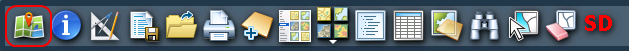
Кнопка «Пометки» дает возможность расставлять на карте собственные маркеры. Маркер может быть одного из четырех видов: точка, полилиния, полигон, надпись. Для каждого маркера можно задать значок или стиль изображения, атрибут «название» и атрибут «описание». После создания пометки, ее атрибуты можно отредактировать, вызвав форму редактирования щелчком по пометке (в полилинию надо тщательно прицелиться). Все сделанные пометки сохраняются и восстанавливаются вместе со слоями карты, при использовании инструментов «сохранить/загрузить». Если вам нужны маркеры, которых нет в списке, дайте нам знать и мы добавим в списки маркеров нужные вам элементы.
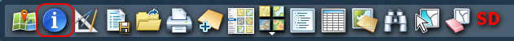
Инструмент а вернее режим курсора мыши «Инфо» позволяет увидеть атрибутивную информацию для объектов выделенного слоя карты. В этом режиме щелчок по обьекту на карте загрузит его атрибуты в специальную экранную форму. Также, есть возможность использовать стандартную функцию работы с атрибутами обьектов, так называемые «всплывающие окна». Чтобы по щелчку на обьекте увидеть атрибутику во всплывающем окне, необходимо предварительно щелкнуть ПКМ на интересующем слое и выбрать из меню пункт «настроить слой». В появившемся окне настроить поведение «всплывающих окон»:
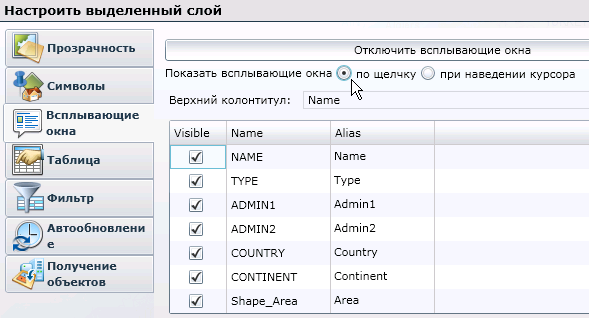
Для некоторых слоев
может быть доступна дополнительная
информация, записанная в связанных
таблицах, в терминологии АркГИС это
relations.
Наши
дополнительные инструменты позволяют
работать с такими связанными записями.
Чтобы получить доступ к
этой функции, надо для желаемого слоя
включить «всплывающие
окна».
После этого, при щелчке
ЛКМ на обьекте слоя будет выводиться
окно с атрибутикой, в нижней части
которого есть кнопка «связанные». Если
такой кнопки вы не видите, значит для
выделенного обьекта связанных записей
нет.
Для
некоторых слоев функция получения атрибутов не предусмотрена, в этом
случае кнопка «Инфо» работать не будет, равно как и «всплывающие окна».
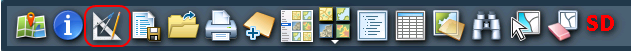
Кнопка «Измерить» включает режим линейки. Рисуя линии на карте вы можете узнать длину линий и площадь образуемых линиями полигонов. Двойной щелчок ЛКМ завершает работу инструмента.
Дополнительная кнопка инструмента измерений, «Измерить (GP)»
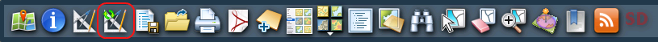
позволяет выполнить измерения более точно за счет использования службы геопроцессинга АркГИС сервера.
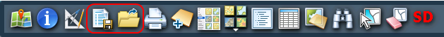
Для сохранения/восстановления состояния карты используйте две кнопки «сохранить»/«загрузить» в основном тулбаре. Кнопки сохранения и загрузки позволяют записать в локальное хранилище браузера текущий набор слоев и, впоследствии, восстановить его. На сервере работает специальное хранилище, карта автоматически сохраняется в нем, в дополнение к сохранению в локальном хранилище вашего браузера. После сохранения карты на сервере, ее можно открыть на любом компьютере в сети, используя URL страницы, в котором закодирован адрес сейва - этот урл генерируется в момент сохранения карты и работать с ним можно как с любыми обычными закладками браузера.
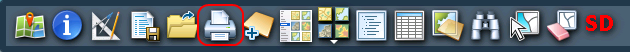
Кнопка «Печать» позволяет вам подготовить макет для печати в файл PDF или на бумагу. Макет может включать в себя, кроме карты, заголовок, комментарий и легенду. В текущей версии Silverlight печать возможна на бумагу любых размеров вплоть до А2.
Кнопка «Печать (GP)»
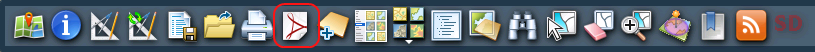
позволяет воспользоваться специальной службой АркГИС сервера, предназначенной для выдачи изображения вашей карты в одном из поддерживаемых форматов, преимущественно PDF.
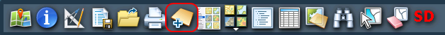
Кнопка «Службы» открывает
окно репозитория слоев. В левой части
окна перечислены разделы репозитория,
в правой части окна перечислены слои
для выделенного вами раздела. Правее
имени слоя, в скобочках, указано значение
внутреннего идентификатора слоя. Этот
идентификатор может помочь при выяснении
причин возможных сбоев слоя. По умолчанию
(не выделен ни один раздел) в правой
части выводятся все слои репозитория.
Снять выделение с раздела можно щелкнув
по нему ЛКМ при зажатой кнопке Ctrl.
Чтобы добавить слой на
карту, выделите его в правой части окна
и нажмите кнопку «Добавить слой к карте» или сделайте двойной щелчок ЛКМ.
Если данные слоя в порядке и сервер его
обслуживает, вы увидите в легенде новый
слой и на карте его данные. Чтобы закрыть окно щелкните крестик в правом верхнем углу окна или клавишу Esc на клавиатуре.
Если в списке нет нужных
вам слоев, дайте нам знать и мы добавим в
репозиторий необходимые элементы.
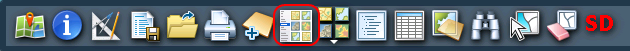
Кнопка «Обзор» позволяет добавить на карту любой слой, для которого известен URL картографической службы ArcGIS. Попробуйте, к примеру, добавить URL http://services.arcgisonline.com/ArcGIS/rest/services и посмотреть, что получится.
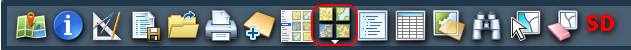
Кнопка «Выберите базовую карту» дает возможность выбрать нужную подложку для вашей карты. Выбранная подложка определяет систему координат карты и степени масштабирования. Если вам нужна подложка которой нет в готовом списке, дайте нам знать и мы добавим необходимые элементы в программу.
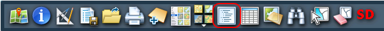
Кнопка «Содержимое карты» включает/выключает отображение панели с легендой карты. Легенда показывает текущий набор слоев карты, названия, условные знаки. С помощью легенды можно манипулировать слоями: настраивать их, удалять, менять местами (сдвигать вниз или вверх) и др. Эти операции доступны через контекстное меню слоев (по ПКМ) или через кнопки в тулбаре легенды.
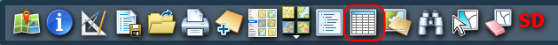
Кнопка «Атрибутивная таблица» включает/выключает отображение атрибутивной таблицы для выделенного в легенде слоя. Следует знать, что в таблице можно видеть данные только для слоев типа FeatureLayer. Для других типов слоев таблица будет пуста и атрибуты можно увидеть только с помощью инструмента «Инфо» или всплывающих окон. Слой FeatureLayer можно получить из обычного картографического слоя, в который они входят в виде подслоев. Для выбора подслоя можно воспользоваться кнопкой «Обзор».
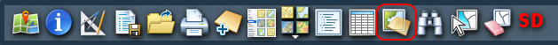
Кнопка «Редактирование» включает/выключает панель режима редактирования. Режим редактирования позволяет вам добавлять, удалять, менять обьекты и их атрибуты на слоях карты. Следует знать, что редактировать можно только специально подготовленные для этого слои.
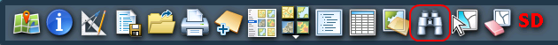
Кнопка «Поиск» включает/выключает панель поиска, позволяющую вам найти в Сети картографические материалы по запросу. После отыскания результатов их можно добавить на карту.
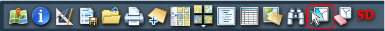
Кнопка «Выбрать» включает режим выбора обьектов рамкой. Работа с выборками возможна только для слоев типа FeatureLayer. Выбранные обьекты подсвечиваются на карте и также отображаются в атрибутивной таблице если она включена.
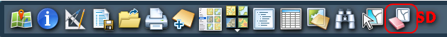
Кнопка «Очистить выборку» снимает выделение с ранее выбранных обьектов.
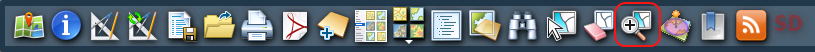
Кнопка «Зум на выбранное» масштабирует и кадрирует карту так, чтобы объекты, выбранные на слое, попали в центр экрана.
Кнопка «Найти в окрестностях» позволяет найти и показать те объекты слоя, что находятся на определенном расстоянии от выделенного.
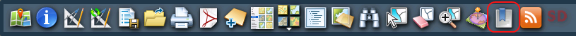
Кнопка «Закладки» позволяет быстро выводить на экран ту или иную область карты, заранее сохраненную в списке закладок. Если вам нужны закладки, которых нет в готовом списке, дайте нам знать и мы добавим необходимые элементы в программу.
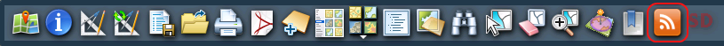
Кнопка «Добавить GeoRss» позволяет добавить на карту слой с данными из источника, поддерживающего формат GeoRSS.
В программе присутствуют и
другие специальные функциональные модули,
включаемые автоматически при использовании специальных картографических
материалов. Описание этих функций не входит в сферу данной справки.
Если вы не нашли в программе нужной вам функции, свяжитесь с нами.
Если что-то не работает или ведет себя странно, попробуйте сперва выполнить стандартную процедуру наладки браузера: очистите кеш браузера, удалите cookie, отключите все ненужные в данный момент тулбары, дополнения и расширения браузера. Переустановите аддон Silverlight с сайта Microsoft. Перезапустите браузер. Проверьте, свежая ли версия браузера у вас установлена. Если все это не помогло, обращайтесь к нам за помощью.